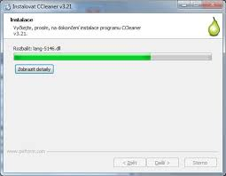

Instalace a odinstalace programů
Program se instaluje z CD/DVD nebo stažením z internetu pomocí
instalačního průvodce (wizzard). Instalace zahrnuje kopírování souborů,
konfiguraci systému a vytvoření zástupců. Odinstalace bývá složitější,
protože programy ukládají soubory do více složek, používají sdílené
knihovny a registr systému. Pro úplné odstranění lze použít speciální
utility.
Lokalizace, platforma a kompatibilita
Lokalizace znamená překlad programu do češtiny, včetně nabídek, nápovědy a
manuálů. Program musí být určen pro konkrétní operační systém a typ
procesoru (platforma). Některé programy jsou multiplatformní. Problémy se
spuštěním mohou vzniknout při různých verzích OS nebo mezi 32bitovými a
64bitovými systémy. Funkce Kompatibilita ve Windows pomáhá spustit
programy i na odlišných verzích OS
Verze, aktualizace a registrace programů
Programy mají verze (např. 1.0, 1.1) a mohou být aktualizovány (update)
nebo povýšeny na novou verzi (upgrade), která přináší nové funkce a vyšší
nároky na počítač. Možné je také snížení verze (downgrade). Registrace
programu je nepovinná, ale často přináší výhody: levnější upgrade,
informace o novinkách, zákaznickou podporu.
